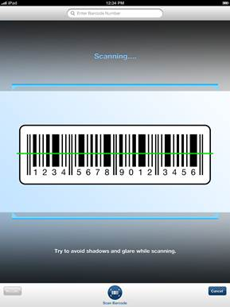
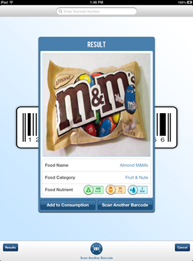
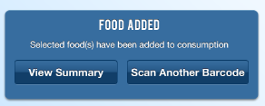

You may enter food items to track by scanning their barcode. To scan barcodes, click on the camera icon from the Summary page:

Next, click on the "Scan Barcode" button:
Using the iPad camera, take a photo of the barcode.

The application will process the scanned barcode and display a match on the screen:

Click the "Add to Consumption" button if the result is correct and you would like to record it. There is also the option to scan another barcode by clicking the "Scan Another barcode" button.
Finally, to record the food item to your consumption history select the scanned food items on the results page (a red cherkmark will appear on items you select). Once you have selected all the food items you'd like to record, click the "Add to Consumption" button and the records will be saved:
